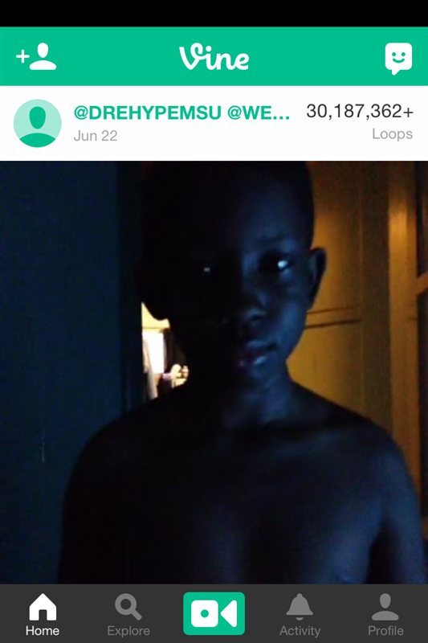
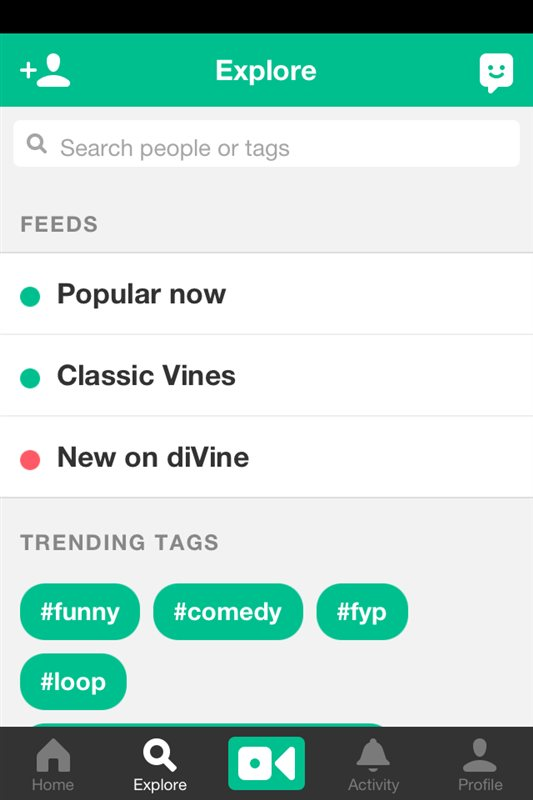
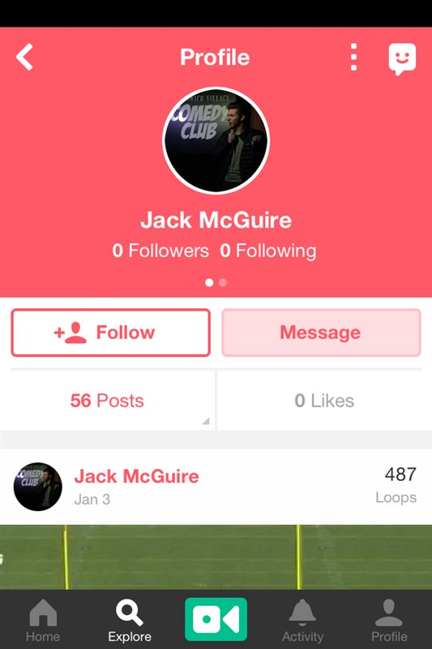
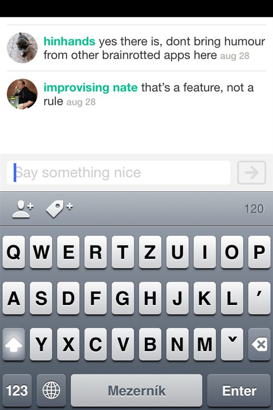

Revine
The original Vine app works again, with diVine's classic and new loops
The original Vine app works again, with diVine's classic and new loops
A tweak for the original Vine app (version 2.5.1). Vine's servers have been gone since 2017, so the app opens to nothing. Revine answers everything the app asks its old servers for with the content of diVine, the Vine reboot: the archive of classic Vines with their original loop counts, and new six-second loops. Nothing in Vine is changed: the tweak sits inside the app, turns diVine's public API into the answers Vine expects and carries its own TLS stack, because diVine's servers only accept today's ciphers.




Unofficial apps by samcejko, not affiliated with or endorsed by Twitch, Google, Apple, TikTok, Instagram, Meta, Spotify, Kick, NVIDIA, Mojang, Microsoft, OpenRouter, Vine, X, diVine or the Moonlight, Sunshine and Apollo projects.